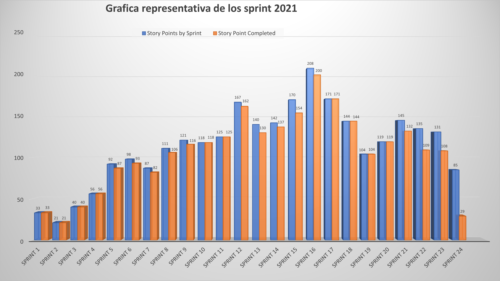

MEDINE
Sprint story points
Course progress
STORY POINT - SPRINT 24
STORY POINTS BY SPRINT
85 points
STORY POINTS COMPLETED
39 points
GRAFICA
This graph represents the points of stories per sprint and those that the
MEDINE
team has managed to complete, in that long journey as shown in the graph, we can see how we have evolved to meet the requirements demanded by our clients.
